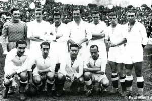
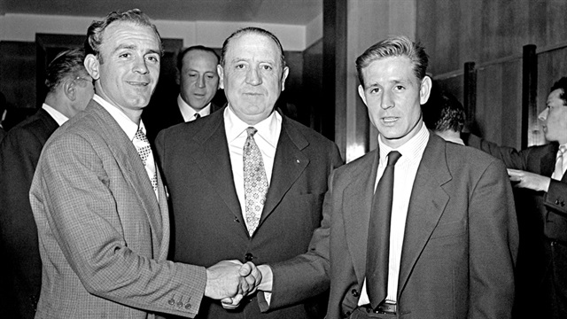
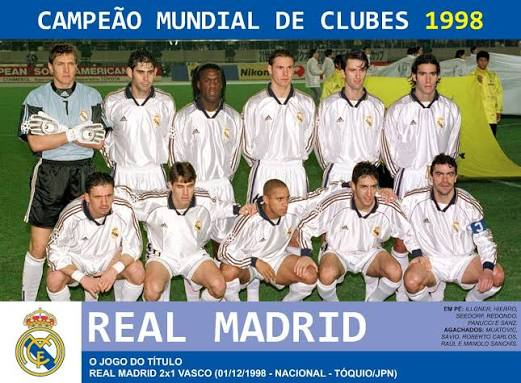
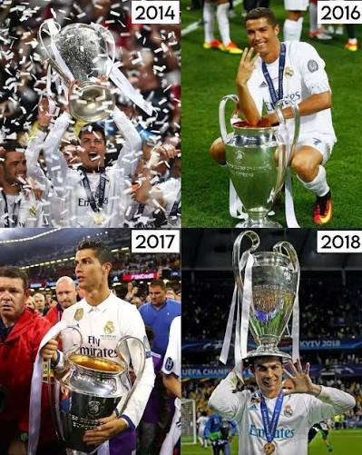
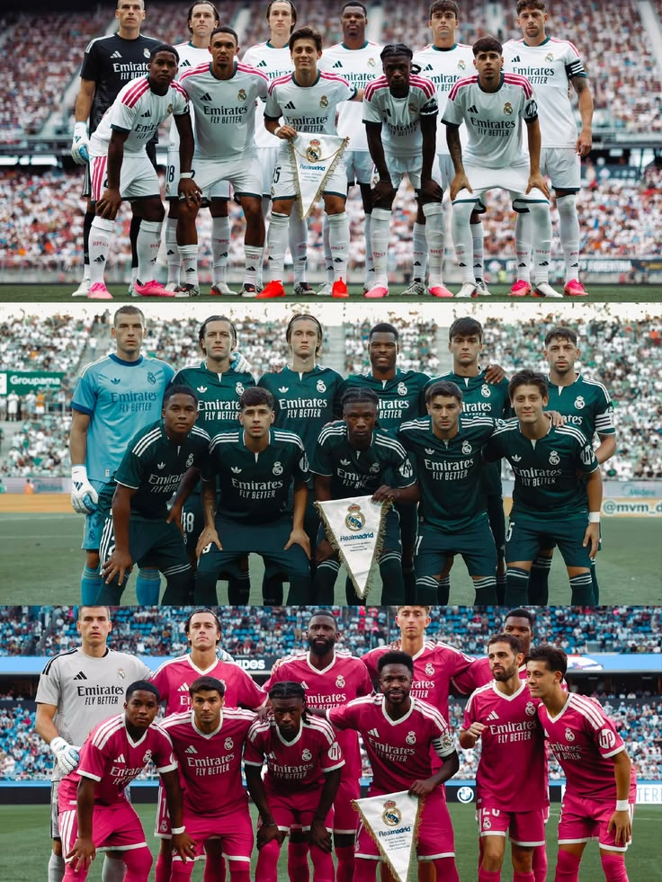

Click an era to open or close it.

Madrid Football Club was founded on March 6, 1902. Brothers Juan and Carlos Padrós were among the founders, and Julián Palacios became the first president. The club won its first Copa del Rey in 1905, beating Athletic Bilbao. In 1920 King Alfonso XIII granted the title “Real”, and the crown joined the badge.

Santiago Bernabéu became president in 1943, and the stadium that carries his name opened in 1947. With Alfredo Di Stéfano, Ferenc Puskás and Paco Gento, Madrid won the first five European Cups (1956–1960). A sixth followed in 1966.

Madrid won the seventh European Cup in 1998, then the 2000 and 2002 finals. Florentino Pérez, president since 2000, signed Figo, Zidane, Ronaldo and Beckham in successive summers. Zidane’s volley at Hampden Park in 2002 won the ninth European Cup.

La Décima came in Lisbon in 2014. Then Madrid won three Champions Leagues in a row, in 2016, 2017 and 2018, the first club to do so in the competition’s modern format.

Paris 2022 brought the 14th European Cup and Wembley 2024 the 15th, against Borussia Dortmund. In 2026/27 José Mourinho is back on the bench, and the Bernabéu has been rebuilt with a retractable roof.